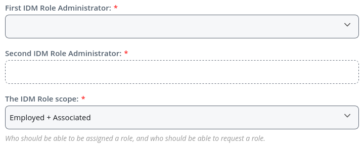
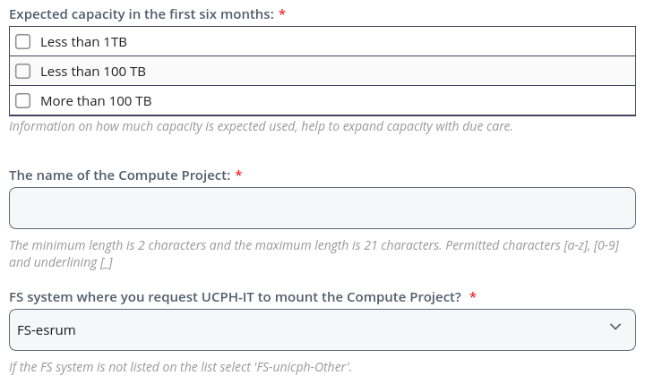
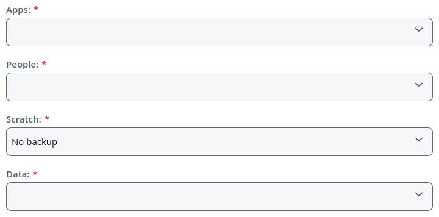
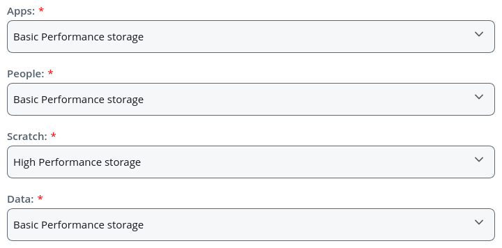
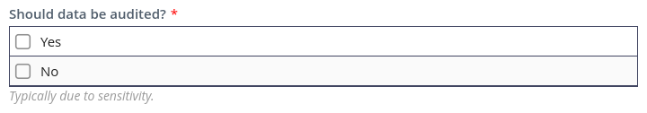

Creating projects and datasets¶
This page describes how to request new projects (located in
/projects) and datasets (/datasets). For a detailed description
of these, see the Data storage on Esrum page. As all Screenshots are
in English, and it may be helpful to change your Serviceportal language
to English using the gear icon (⚙) on the left side of the page.
Briefly,
Projects are meant to house apps, data, and results for individual projects and the people working on those projects. Every member of a project will have write access to the standard subfolder in the project folder, and will be able to deposit data.
Datasets are meant for static data and as such only the owner has the ability to add or modify files in a dataset. This is useful for both raw data and for results that are intended to be shared across different projects.
Warning
When dealing with GDPR projected data, the project and datasets should correspond to the data processing agreement in place for each dataset. Do not store datasets under different GDPR data processing agreement in the same project or dataset. Similarly, do not place GDPR protected and non-GDPR protected data in the same project/dataset, if different people needs access to the GDPR and non-GDPR data. Keeping datasets separate ensures that only people with relevant permissions from the data owner are able to access the GDPR protected data.
Creating a new project or dataset¶
To request the creation of a new project or dataset, log in to the UCPH-IT Serviceportal:
Click the
Create ticketbutton.If you want to create a project, search for
Compute Projectsand click theCompute Projects (Network file service)button under theResearch ITsubsection.If you want to create a dataset, search for
Compute Datasetand click theCompute Dataset (Network file service)button under theResearch ITsubsection.
Click the
REQUESTbutton on the resulting popup.
You should now be on the Compute Projects (Network file service) or
the Compute Dataset (Network file service) order page, depending on
the type of folder you wanted to create. This page is split into a
number of sections, all of which have to be filled out:
IDM¶
In this section you have to enter two IDM Role Administrators. These
are the people responsible for administrating access to the project via
the Identity Management System. We highly recommend that at least
one of these two people are a permanent employee at CBMR (e.g. a PI or
staff scientist), to ease transitions if an employee on a temporary
contract leaves the center.
Finally, the IDM Role scope defines who can be granted access to the
project. The Employed + Associated option is recommended in most
cases (as shown above).
Compute Project / Compute Dataset¶
Firstly enter the Expected capacity in the first six months, i.e.
how much storage capacity you anticipate needing for your project in the
next six months. This is not a hard limit, but is rather an indication
to UCPH-IT to help them prepare for growing needs.
Secondly, enter a name for the project or dataset. The name has to be
unique across UCPH, so it may be helpful to include either a center name
(e.g. cbmr_) or group name (e.g. dap_) as a prefix. Note
that this name is public. Only letters (a to z), digits (0
to 9), and underscores (_) are allowed.
Finally, pick FS-esrum for the option FS system where you request
UCPH-IT to mount the Compute Project as shown above.
Backup Policy¶
Depending on whether you are creating a project (top image) or dataset
(bottom image), you will either have to select backup policies for three
folders (Apps, People, and Data) or for the entire dataset
folder.
If your project or dataset contains any GDPR protected data, then you must select
GDPR backuppolicy for all folders. As this option imposes limits on how backups are stored and how they can be accessed, you should only pick theGDPR backupoption if the data is GDPR protected.If your project does not contain GDPR protected data, then we recommend that you pick the
Basic backuppolicy for all folders.
The Scratch folder does not have backups and as such no policy
choice needs to be made for this folder.
Performance class¶
Depending on whether you are creating a project (top image) or dataset (bottom image), you will either have to a performance policy for three folders or for the entire dataset folder.
For projects, we recommend that you select
Basic Performance storageforApps,People,Data, and for datasets, and that you selectHigh Performance storageforScratchas shown above.For datasets, we recommend selecting
Basic Performance storageas shown above.
Audit¶
If any of the data that is going to be stored in this project or
dataset is covered by the GDPR, or is otherwise sensitive, then you
must select Yes for the option Should data be audited.
Review & Submit¶
Once you have filled in the above sections, click the Review &
Submit button, verify your choices, and then click Submit to send
the request to UCPH-IT.